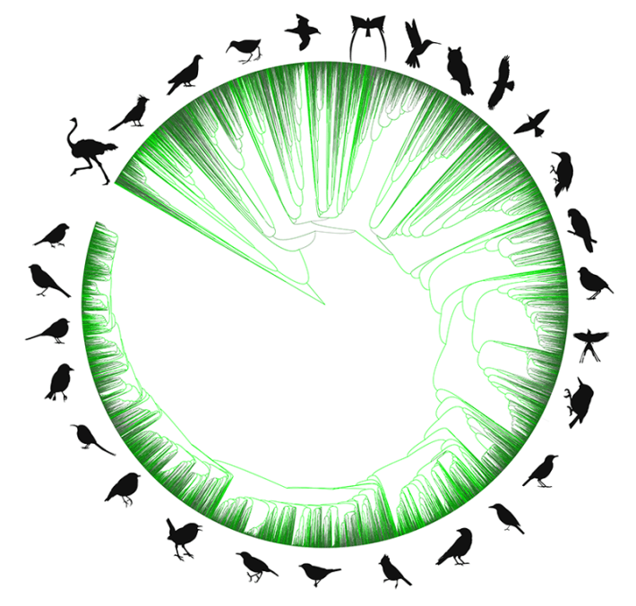

In the Northern Hemisphere, birds of many a feather are currently streaming northward, from tropical wintering grounds to summer feeding and breeding areas. These avian migrators may be blissfully unaware of the minutiae of scientific publication, but ornithologists are atwitter with a new paper detailing the evolutionary relationships between every known bird species.
The authors of the new study in the Proceedings of the National Academies of Sciences constructed an evolutionary tree for all birds using data on more than 9,200 species previously published in hundreds of studies between 1990 and 2024. They merged this information with curated data on an additional 1,000 species to build an open database that reveals how every known species of bird is related through evolutionary time—and that researchers can share and update with new findings.

FLOCKING TOGETHER: Unlike an old-fashioned family tree, this tree of all birds shows representatives of different avian families living today ringing the outside of a circle. The point in the middle of the circle stands for the common ancestor of all birds, and the connections between the individual threads branching off from that point chart the evolutionary connections between thousands of bird species. The shorter the branches connecting one species to another, the more closely related those species are. For example, ostriches and similar birds are more distantly related to other living bird species. The threads are colored based on how many published studies contributed information to our understanding of the relationship—brightest green is 10 or more, gray is zero. Credit: Emily Jane McTavish, silhouettes from PhyloPic.org
The big bird database effort, led by University of California, Merced, biologist Emily Jane McTavish, is part of a broader project, called the Open Tree of Life, which seeks to create a tree that contains all of Earth’s known organisms. Presently, the Open Tree of Life contains data on more than 2.5 million species, with new information added constantly.
According to McTavish and her coauthors, researchers at the Cornell Lab of Ornithology, the University of Kansas, and elsewhere, the comprehensive tree of birds represents not only a snapshot of bird evolution, but it also, “provides a framework for maintaining an accurate and readily available estimate of bird relationships, even as new species are discovered, and prior relationships and taxonomy are revised,” they write. Beyond birds and other animals, the methodology and software they used can be applied to building similar trees for any group of organisms. 
Lead image: Olga Korneeva / Shutterstock